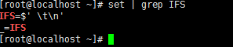
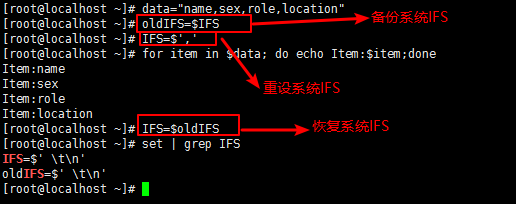

常用环境变量¶
shell脚本中常用的环境变量有
0x00 IFS¶
shell下的很多命令都会分割单词，绝大多数时候默认是采用空格作为分隔符，有些时候遇到制表符、换行符也会进行分隔；这种分隔符是由IFS环境变量指定的
IFS是shell内部字段分隔符的环境变量

由上图可知：默认的IFS在碰到空格、制表符\t或 分行符\n就会自动分隔进入下一步；但是对空格处理有点不一样，对行首和行尾两边的空格不处理，并且多个连续的空格默认当作一个空格
有些时候在编写脚本或执行循环的时候，修改IFS可以起很大作用。如果要修改IFS，最好记得先备份系统IFS，再需要的地方再还原IFS

大多数时候，我们都不会去修改IFS来达到某种目的，而是采用其他方法来替代实现。这样就需要注意默认IFS的一个特殊性，它会忽略前导空白和后缀空白，并压缩连续空白；但是在某些时候，这会出现意想不到的问题

因此，在可以对变量加引号的情况下，一定要加上引号来保护空白字符
0x01 RANDOM¶
RANDOM环境变量是bash的伪随机数生成器
- $RANDOM=======生成0~32767之间的随机数
- $[RANDOM%num]===生成0~num之间的随机数；对算术表达式的值进行引用时需要使用[]
代码示例：通过脚本生成n个随机数(N>5),对这些随机数按从小到大排序
#!/bin/bash
declare -a arrynumber
read -p "Enter a number:" opt
opt=$[opt-1]
for i in `seq 0 $opt`;do
arrynumer[$i]=$[RANDOM%1000]
done
let length=${#arrynumer[@]}
length=$[length-1]
for i in `seq 0 $length`;do
let j=i+1
for j in `seq $j $length`; do
if [ ${arrynumer[$j]} -lt ${arrynumer[$i]} ];then
temp=${arrynumer[$j]}
arrynumer[$j]=${arrynumer[$i]}
arrynumer[$i]=$temp
fi
done
echo ${arrynumer[$i]}
done